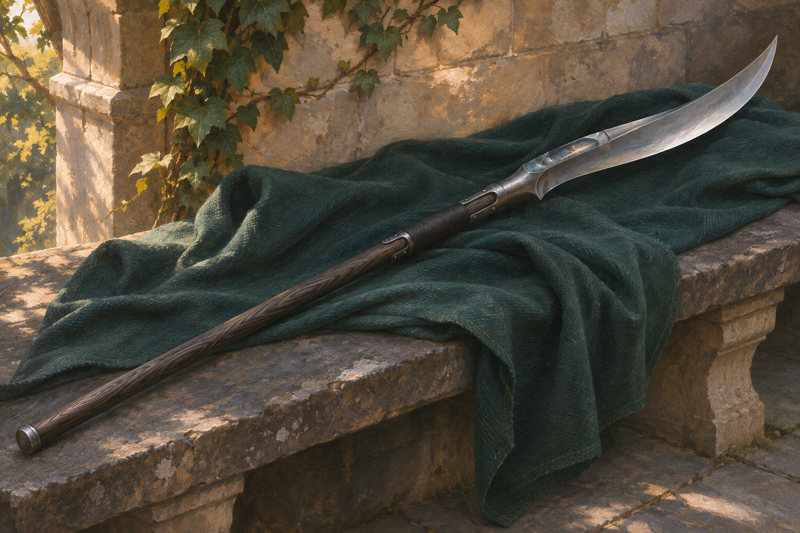
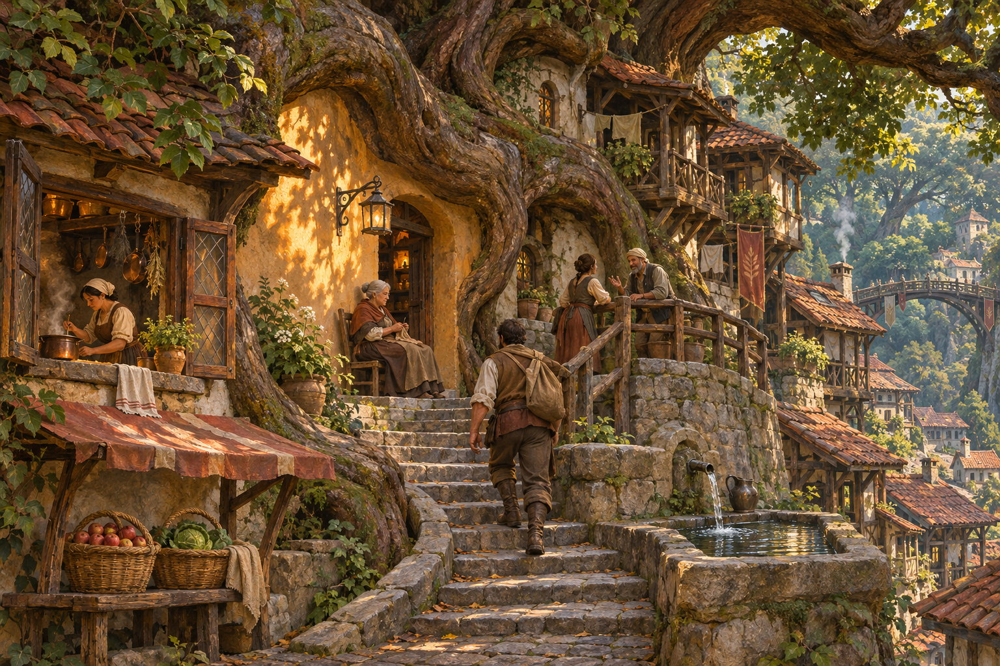
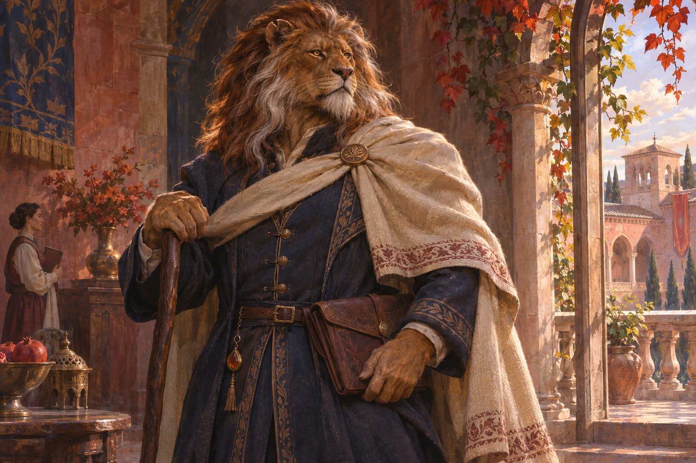
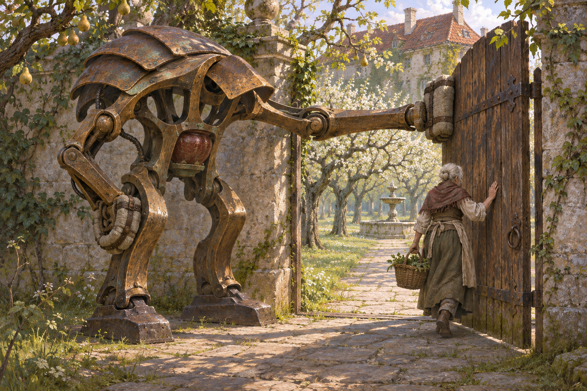
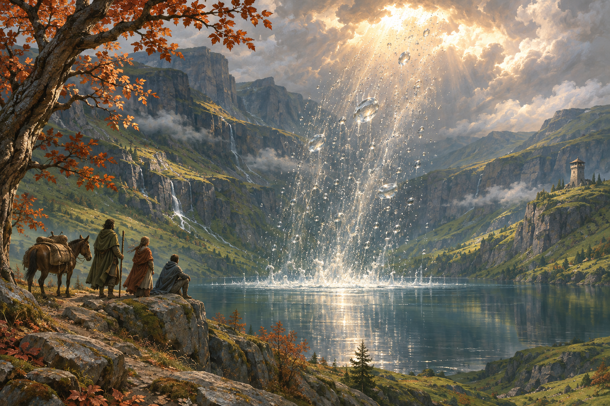

01 · Accepted reference
Stormglass Glaive
A new weapon silhouette with restrained imbued material, using the physical equipment presentation you liked. Its power and faction are unassigned.

03 · Accepted reference
The Rootbound Quarter
An inhabited forest settlement with architecture, domestic life and trade. Tests a richer built environment for woodland societies without making everyone a druid.

05 · Accepted reference
The Ivory-Mantle Envoy
A lion-folk presence outside battlefield armor, exploring dignity, diplomacy and material culture. This individual does not define all lion-folk dress or politics.

06 · Accepted reference
The Garden That Still Opens
An old, large construct carrying out a modest routine. Tests personality through posture and persistent purpose, without assuming consciousness.

07 · Accepted reference
The Velvet Stair
Selected court-intrigue character, long gown, pose and divided lighting. The earlier version is superseded and deleted.

08 · Accepted reference
The Rain That Rises
A rare, unexplained magical landscape event: water ascending from a valley. Tests wonder at a large scale without deciding who caused it or how it works.
